El umbral, redefinido
Una familia de puertas de vidrio slim-profile. Quince configuraciones que parten del mismo perfil de aluminio anodizado, mecanismo soft-close y vidrio laminado de 8mm — nueve acabados de color de perfil.
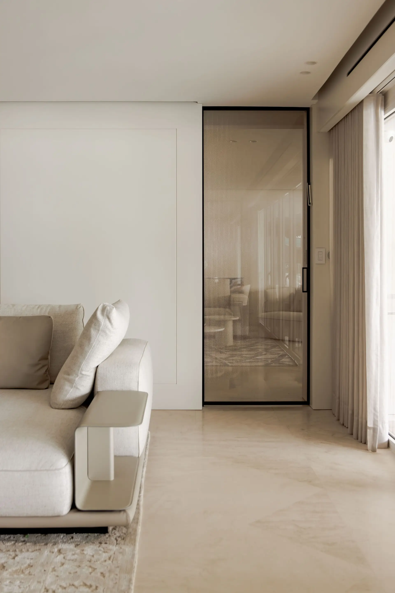
pglass-1a
1 hoja corrediza colgada de cielo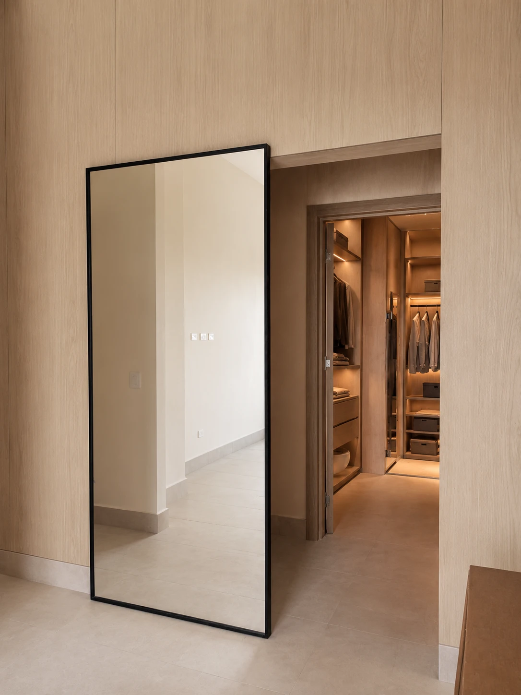
pglass-1b
1 hoja corrediza de pared
pglass-2a
2 hojas — 1 fija + 1 corrediza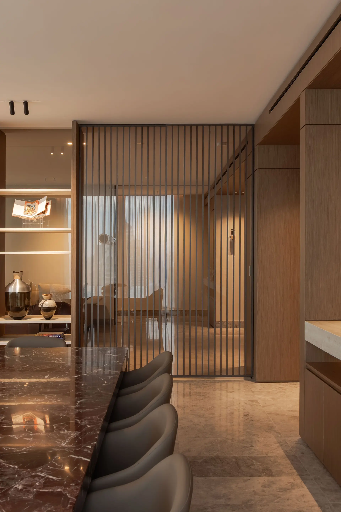
pglass-2b
2 hojas corredizas — ambas hacia el mismo lado, tipo pocket
pglass-2c
2 hojas corredizas — una corre a la izquierda y otra a la derecha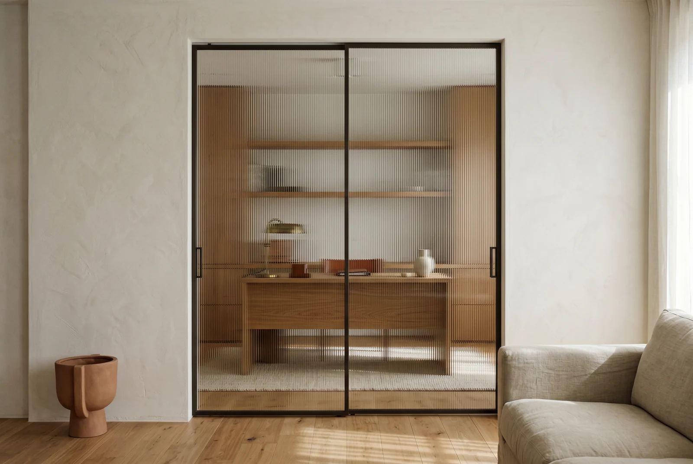
pglass-2d
2 hojas corredizas — ambos sentidos sobre el mismo riel
pglass-3a
3 hojas — 1 fija + 2 corredizas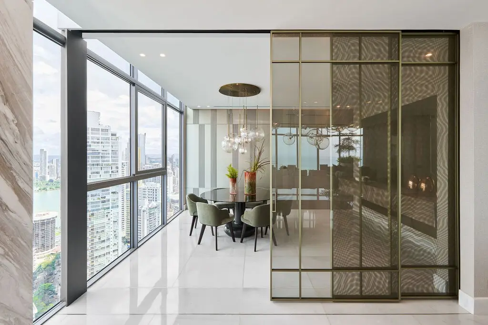
pglass-3b
3 hojas corredizas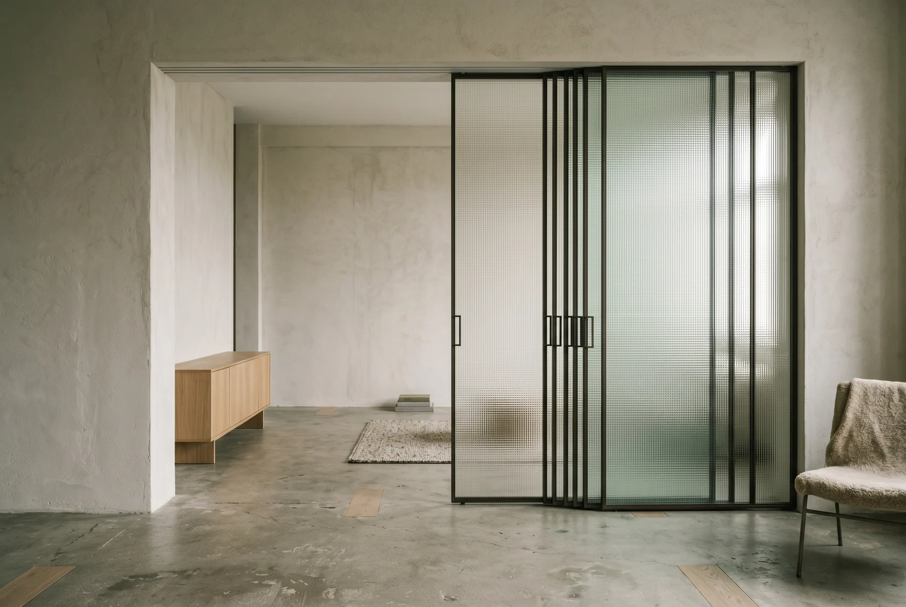
pglass-3c
3 hojas corredizas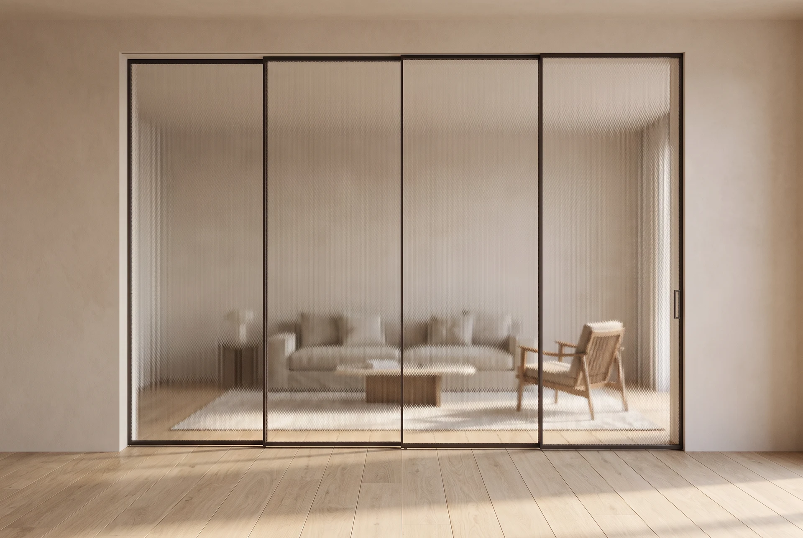
pglass-4a
4 hojas — 1 fija + 3 corredizas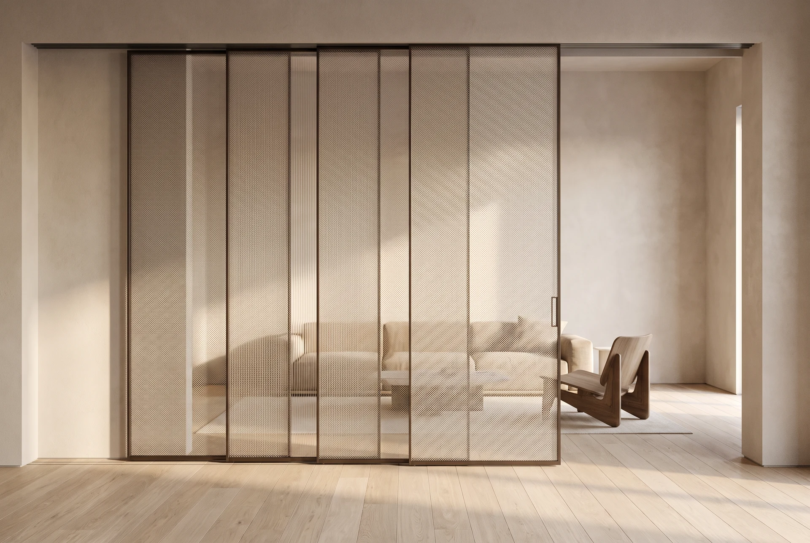
pglass-4b
4 hojas corredizas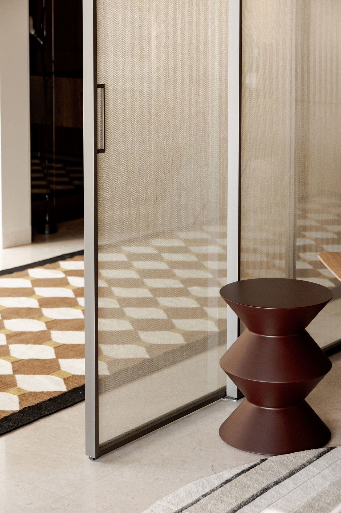
pglass-4c
4 hojas — 2 fijas + 2 corredizas
pglass-piv
Puerta pivotante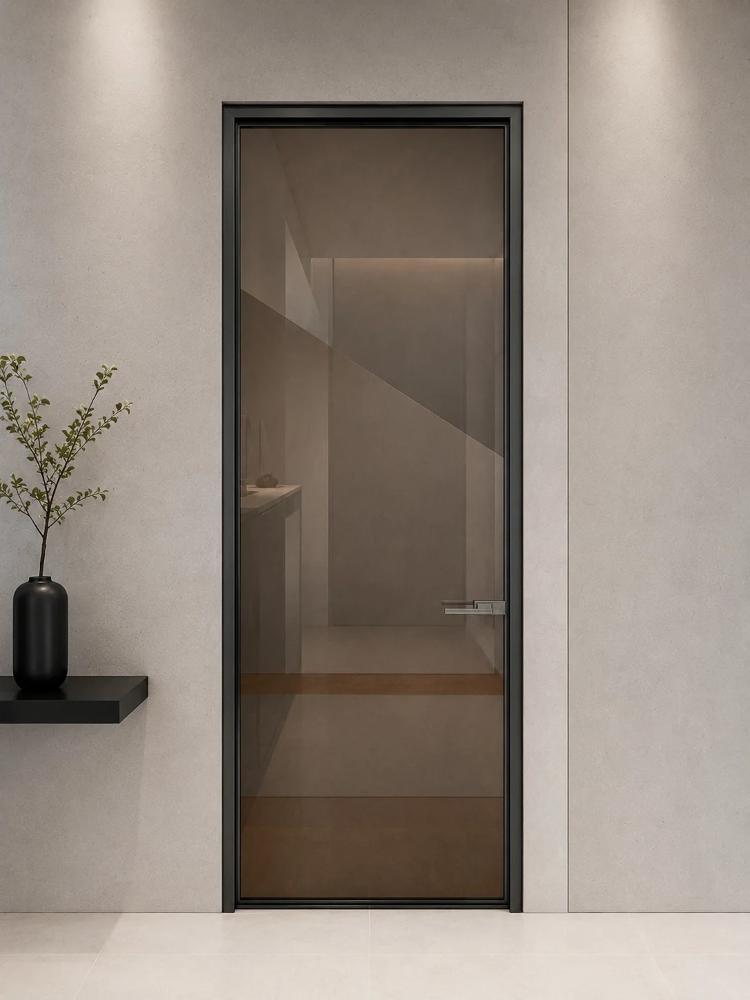
pglass-swi
Puerta abatible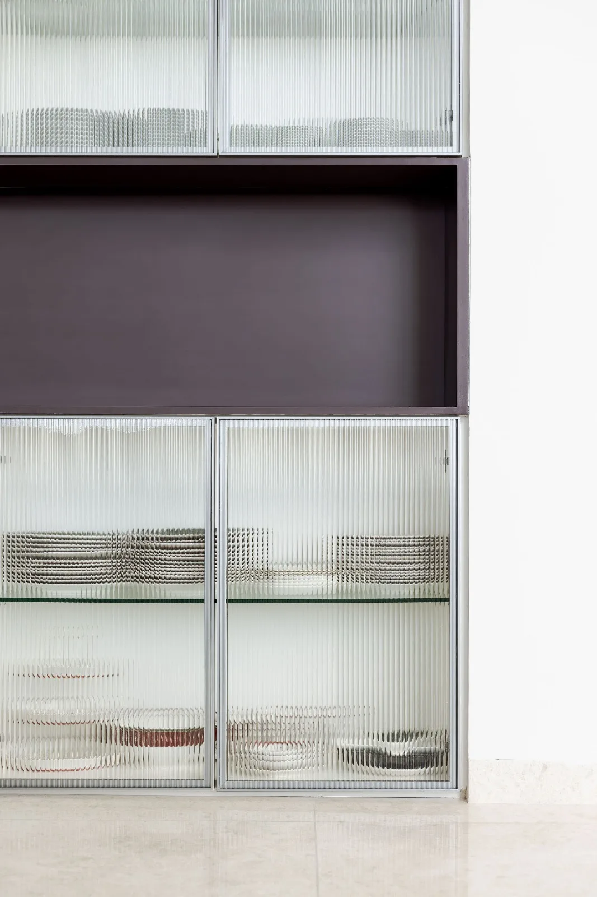
pglass-CAB
Puerta de gabineteNo encontramos sistemas para esa búsqueda.
Una familia. Quince configuraciones. El mismo perfil slim, el mismo vidrio laminado de 8mm, el mismo soft-close — variando sólo en número de hojas, tipo de apertura y luz. Un sistema que crece con el vano.
Quince configuraciones
Filtra por número de hojas o por tipo de apertura. Cada tarjeta abre su ficha técnica completa — dimensiones, header de carga y vidrios compatibles.
1 hoja corrediza colgada de cielo
1 hoja corrediza de pared
2 hojas — 1 fija + 1 corrediza
2 hojas corredizas — ambas hacia el mismo lado, tipo pocket
2 hojas corredizas — una corre a la izquierda y otra a la derecha
2 hojas corredizas — ambos sentidos sobre el mismo riel
3 hojas — 1 fija + 2 corredizas
3 hojas corredizas
3 hojas corredizas
4 hojas — 1 fija + 3 corredizas
4 hojas corredizas
4 hojas — 2 fijas + 2 corredizas
Puerta pivotante
Puerta abatible
Puerta de gabinete
4 hojas — 2 fijas + 2 corredizas
Dos paños fijos en los extremos y dos corredizos centrales. Perfil slim, vidrio laminado de 8mm y mecanismo soft close, como toda la familia.
3 hojas corredizas
Tres paños corredizos sobre un vano de hasta 4 metros. Perfil slim, vidrio laminado de 8mm y mecanismo soft close, como toda la familia.
Nueve acabados
 Black
Black Blanco · RAL 9016
Blanco · RAL 9016 Brass
Brass Burgundy · RAL 3007
Burgundy · RAL 3007 Cobalt Blue · RAL 5013
Cobalt Blue · RAL 5013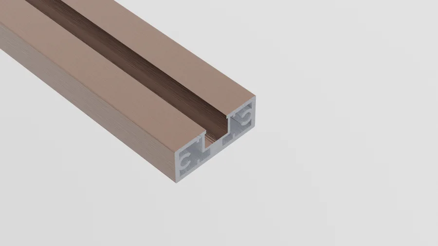
Gold Rose Marrón
Marrón Olive · RAL 6003
Olive · RAL 6003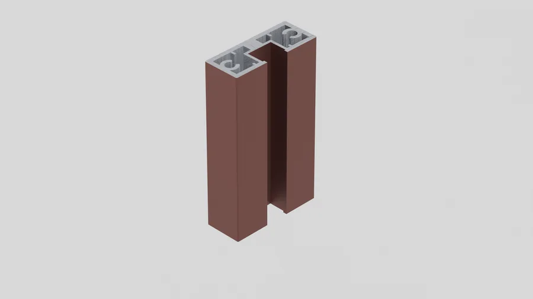
Orange · RAL 8002El vidrio divide sin cerrar
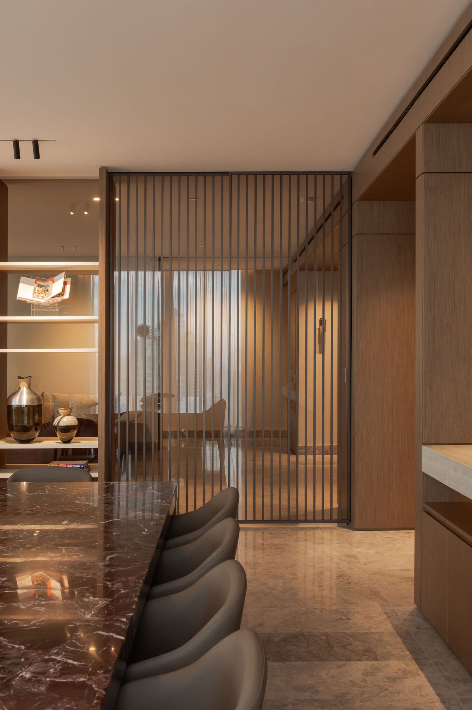

 A terraza
A terraza
 Suite
Suite
¿Un sistema para tu proyecto?
Cada sistema se dimensiona al vano — luz, header de carga, color de perfil y vidrio del catálogo Glass Lab. Cuéntanos el proyecto y calculamos la configuración exacta.